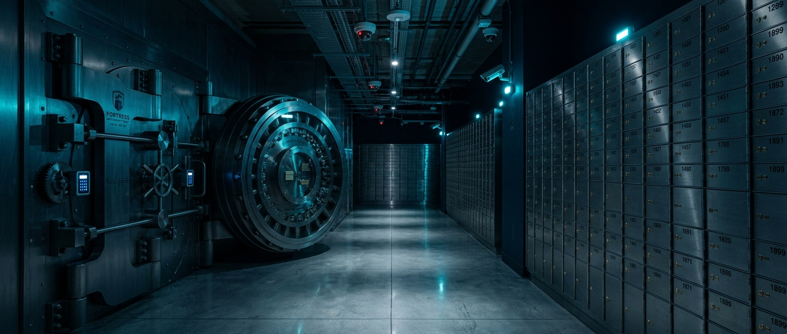

金融場域 · 銀行分行／ATM／金庫保管箱
金融機構
高價值資產、門禁控管、事件追溯

真正的金融安全，是斷網、停電都不會閉眼。
為什麼需要客製化的金融服務？
金融場域涉及高價值資產與大量人流，一旦發生異常，不僅造成財務損失，更影響營運與信譽。SPACES 依營業／非營業時段自動切換布撤防，金庫前室與保管箱室一有異動就告警；櫃員靜默緊急鈕零時差通報，斷網仍本地續錄、復網補傳，打造全天候安全防護。
使用 SPACES 可以解除這些疑慮
ATM／營業廳安全管理困難
重要區域異常入侵立即告警，完整保存影像紀錄，降低搶奪、破壞等風險。
擔心重要區域遭入侵
金庫前室、保管箱室打烊後一有非法位移即告警，影像全時留存可追溯。
無法即時掌握各據點狀況
手機即可遠端查看，即時接收事件通知，總部一支 APP 看全省分行。
創造價值：提升安全等級與稽核效率
SPACES 怎麼配置？
| 產品配置 | 部署位置與用途 |
|---|---|
| 無線保全主機 SGW | 全據點防護中樞，依營業／非營業時段自動切換分區保全，支援 Wi-Fi／有線／LTE 三重備援。 |
| 無線磁簧感應器 SDS | 金庫門、保管箱室門、後門逃生門開關偵測。 |
| 無線位移偵測器 SPIR | 營業廳、走道、金庫前室於打烊後偵測非法位移。 |
| 緊急按鈕 SPB | 出納櫃檯、櫃員腳邊靜默觸發，遭遇搶案不驚動歹徒即時通報。 |
| IPCAM 攝影機 | 出入口、櫃檯、金庫全時錄影，SD 卡＋雲端雙備份。 |
| 有線轉無線轉換器 SWDI | 整合既有有線警報與門禁設備，保留原投資。 |
規格 — 對你的場域代表什麼
把數字翻成你聽得懂的結果。
| 規格／數字 | 對你的場域代表什麼 |
|---|---|
| 三網備援自動切換 | Wi-Fi／有線／LTE，一條線斷了系統自己換另一條繼續錄，不靠單一網路撐場。 |
| 事件影像雲端 30 天 ＋ SD 卡全時錄影 | 雙重備份；金融監理要調影像，調得出來、來得及。 |
| 靜默緊急鈕零時差通報 | 搶案當下不驚動歹徒，通報已送達、支援已在路上。 |
| 影像可留存於場域（個資法友善） | 高敏感資料不必離開行內，符合法遵與資安要求。 |
導入後的效益
- 靜默緊急按鈕於搶案發生時即時通報中心，保障人員安全。
- 分區保全自動排程，營業／打烊布撤防免人工操作、杜絕疏漏。
- 完整事件日誌結合影像紀錄，滿足金融監理稽核與事後調閱需求。
- SD 卡錄影備援確保關鍵影像不遺失，斷網復網自動同步。
※ AI 異常行為辨識為發展中的未來藍圖功能；本頁所述布撤防、錄影、告警、門禁與備援均為可交付能力。
金融場域常見問題
分行晚上沒人，要怎麼知道有人闖進金庫或保管箱區？
+
在金庫前室、保管箱室與走道裝設位移偵測，門上加裝開關感應；打烊後一有人移動或門被打開，手機 APP 就即時收到告警並可立刻調出現場畫面，不必有人整夜盯著。新光保全 24 小時管制中心同步收到，必要時派員到場。
誰在幾點進過金庫、機房，事後查得到嗎？
+
可以。以讀卡機管控門禁，每個人在哪個時段、哪個區域可以通行都能個別設定；所有進出與系統操作都進事件日誌，事後可依時間、人員回溯，並結合影像紀錄，滿足稽核需求。
櫃檯遇到搶案，怎麼在不刺激歹徒的情況下報警？
+
在櫃員腳邊或櫃檯下方裝設靜默緊急鈕，按下去不出聲、不亮燈，通報直接送到管制中心並連動派遣，後台同時自動錄下觸發前後的影像。
銀行打烊、行員下班後，營業大廳與 ATM 區如何建立防盜防線？
+
SPACES 以點、線、面立體佈防：出入口與對外窗裝設無線磁簧感應器偵測異常開啟；ATM 區、臨櫃理財區與金庫走廊部署無線位移偵測器捕捉非法移動；任一感測器觸發即啟動二次確認並推播告警，中控人員秒級調閱現場畫面。
金庫、票券保管室與機房如何落實多層級進出管制？
+
以無線讀卡機進行多層級門禁權限控管，可雲端派發、變更不同主管與員工在特定時段、特定區域的通行權限；金庫與機房門裝設無線磁簧感應器，非授權時間或異常撬開即零時差推播告警給中控室與保全中心。
分行遇到搶劫或人身安全威脅，系統如何第一時間通報外部救援？
+
在櫃檯下方、服務台或主管桌底隱密部署靜默緊急按鈕；行員一鍵按下即繞過繁瑣程序，直接與保全中心零時差派遣連動，後台 APP 立即跳出通知並自動錄製觸發前段影像，且不出聲、不亮燈、不驚動歹徒。
金融監理要調閱影像，SPACES 調得出來、來得及嗎？
+
可以。事件影像雲端保存 30 天，搭配 SD 卡全時錄影雙備份；即使斷網，主機仍持續本地錄影，復網後自動補傳。完整事件日誌結合影像紀錄，滿足金融監理對可追溯性與稽核的要求。高敏感影像可選擇全程留存於場域，符合個資法。